Dalam Pyramid of Learning, kemampuan akademik berada di puncak. Fondasinya adalah sistem saraf pusat dan pengalaman yang diterima melalui indra. Di Sensory Class, kami mengajak si kecil bermain di bagian dasar ini. Ia merasakan tekstur, menjaga keseimbangan, dan mengenali posisi tubuhnya saat bergerak.
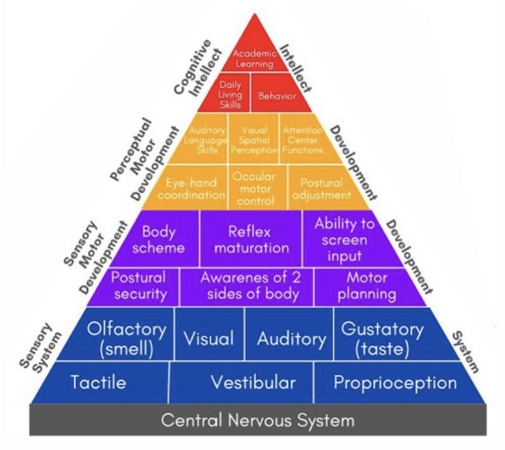
Apa hubungannya dengan belajar menulis?
Saat menulis satu huruf, si kecil perlu menjaga posisi duduk, melihat ke arah kertas, lalu mengarahkan tangannya. Di kelas, ia bisa berlatih memakai kemampuan itu lewat permainan sederhana. Satu tangan menahan mangkuk, sementara mata mengikuti sendok di tangan lainnya agar beras masuk ke dalam mangkuk.
Bekal yang dibawa si kecil ke sekolah
Saat bermain bersama, anak juga mendapat kesempatan untuk menyimak, menunggu giliran, dan mencoba lagi ketika berasnya tumpah. Dengan pendampingan guru, ia belajar menghadapi rasa kesal dan kembali fokus. Inilah yang ingin kami tumbuhkan lewat bermain, sesuai ritme masing-masing anak.
Wonder Class
Ada anak yang langsung meraup beras warna-warni dengan kedua tangannya. Ada juga yang mengamati dulu, lalu pelan-pelan mencoba dengan satu jari. Di Wonder Tree, kami memberi ruang untuk keduanya. Setiap anak boleh mulai dari apa yang membuatnya nyaman.
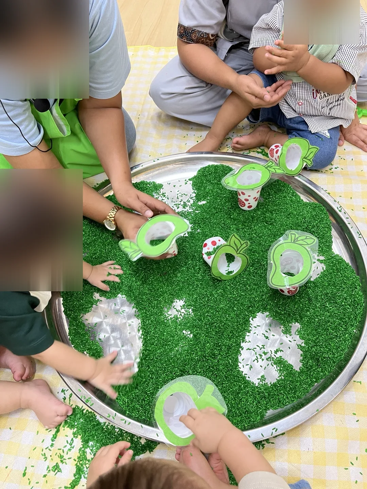
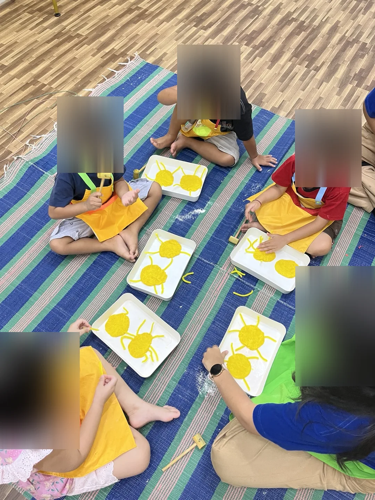
Apa saja kegiatan di Sensory Class?
Touch and Feel
Si kecil meraba, meremas, dan menuang berbagai bahan. Saat menyendok beras atau memegang adonan, ia mengenal perbedaan tekstur dan berlatih mengarahkan tangannya. Kata-kata seperti “lembut”, “kasar”, dan “lengket” juga bisa Parents pakai saat mengenalkan tekstur makanan di rumah.
Gross Motor
Saat meniti jalur keseimbangan, anak mencoba mengatur langkah, memperhatikan pijakan, dan menjaga tubuhnya tetap seimbang. Guru mendampingi dan menyesuaikan tantangan dengan usia anak.
Creative Time
Di Creative Time, si kecil belajar seni dan prakarya sambil mewarnai, menempel potongan kertas, dan melukis dengan jari (finger painting). Kegiatan ini melatih motorik halus tangan dan jari. Anak mengembangkan kreativitas saat memilih warna dan bentuk, serta berlatih fokus saat mengikuti setiap langkah.
Mengapa Sensory Class juga diadakan di luar ruangan?
Di taman, angin membuat pita warna-warni bergerak. Si kecil bisa berjalan melewati tirai pita, merasakan rumput di bawah telapak kaki, lalu merentangkan tangan saat meniti pijakan. Di sela bermain, ada waktu untuk duduk di tikar dan melihat bayangan daun bergeser. Suasana asri seperti ini yang ingin kami hadirkan saat Sensory Class di luar ruangan.
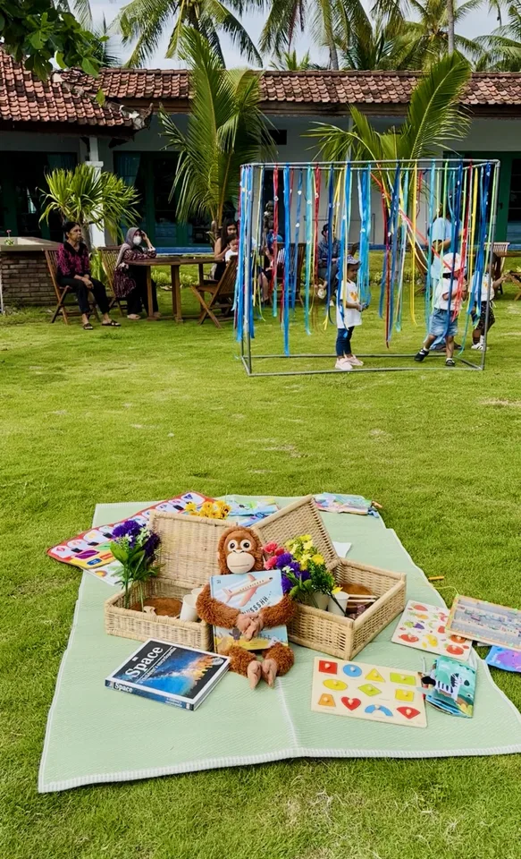
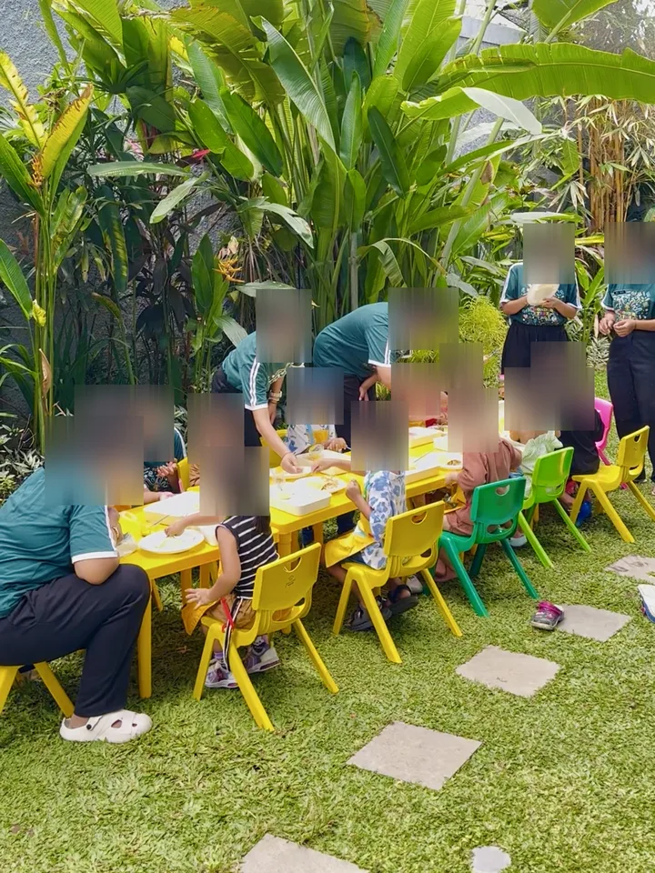
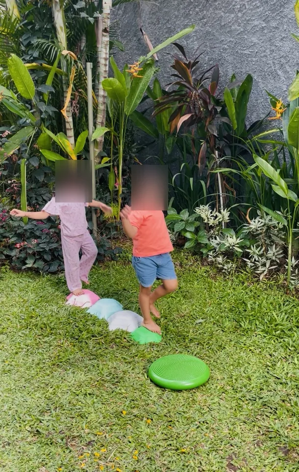
Bermain di luar juga memberi anak kesempatan menikmati cahaya alami. Sinar matahari membantu kulit membentuk vitamin D, yang berperan dalam fungsi normal sistem imun.
Pilihan kelas untuk si kecil
3 bulan per term
Sensory Class reguler
Anak mengikuti kegiatan bersama kelompok usianya selama tiga bulan. Di akhir term, psikolog mengamati anak saat berkegiatan agar Parents mendapat gambaran tentang perkembangannya di kelas.
Di akhir term, Parents juga menerima laporan perkembangan anak (progress report). Ada tambahan diskon bagi saudara yang ikut mendaftar.
4 pertemuan per bulan
Sensory Class weekend
Kelas berlangsung seminggu sekali pada Sabtu atau Minggu, sesuai jadwal kelompok. Parents bisa membayar per bulan atau sekaligus untuk tiga bulan. Paket weekend tidak mencakup observasi psikolog maupun laporan perkembangan anak.
6 bulan per term
Growing Class
Setiap hari kelas, si kecil bermain sensori dan mengikuti kegiatan prasekolah, seperti mengerjakan lembar aktivitas (worksheet), menggambar, atau membuat prakarya. Lewat rutinitas ini, anak belajar mengikuti arahan, bergiliran, dan semakin mandiri.
Kelompok usia Sensory Class
Kelas
Usia anak
Jolly · khusus weekend
6–11 bulan
First Step
12–18 bulan
Magic
18–24 bulan
Shining
2–3 tahun
Mighty
3–5 tahun
Sensory Class berbahasa Inggris
Di kelas ini, guru mengajak anak menggunakan bahasa Inggris sambil bermain. Saat menuang beras, misalnya, anak mendengar kata pour sambil melihat gerakannya. Pelan-pelan, si kecil diajak mencoba mengucapkan kata sederhana dan menggunakannya bersama guru dan teman.
Outing Class & Pop-Up Class
Sesekali, anak-anak di Sensory Class reguler tiga bulan belajar bersama guru di luar Wonder Tree lewat Outing Class. Pada kesempatan tertentu, kami juga membuka Pop-Up Class untuk umum. Parents bisa mendaftarkan si kecil khusus untuk acara tersebut, tanpa perlu mengikuti kelas reguler.
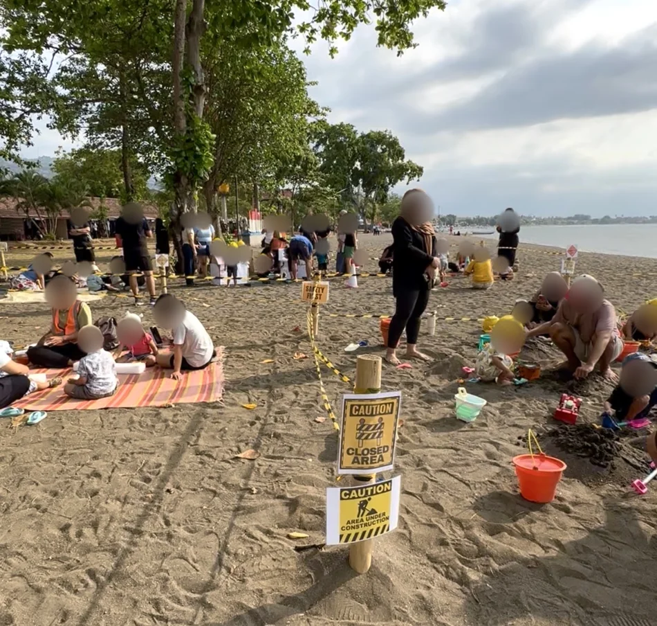
Bermain pasir saat kegiatan di pantai
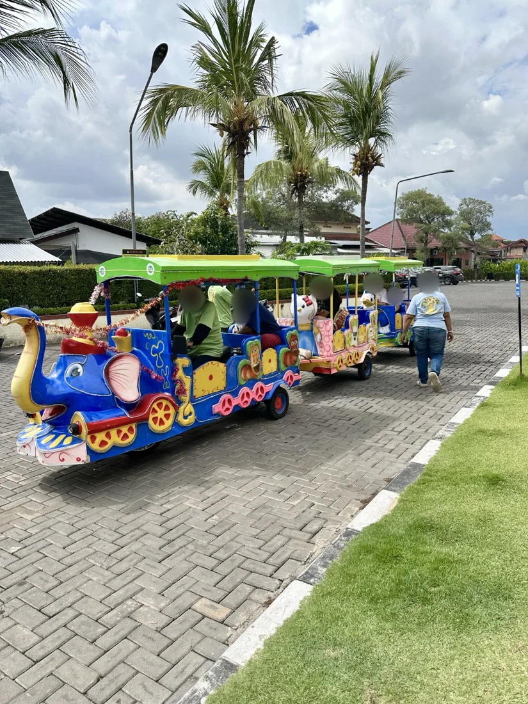
Naik kereta mini saat outing
Little Drummer · Kelas drum untuk anak usia dini
Dua ketukan, berhenti sebentar, lalu dua ketukan lagi. Di Little Drummer, si kecil mendengarkan irama pendek dari guru, lalu mendapat giliran untuk menirukannya. Anak diajak mengenal bunyi drum dan simbal, mencoba memukul dengan tangan kanan dan kiri secara bergantian, serta mendengarkan aba-aba kapan mulai dan berhenti.
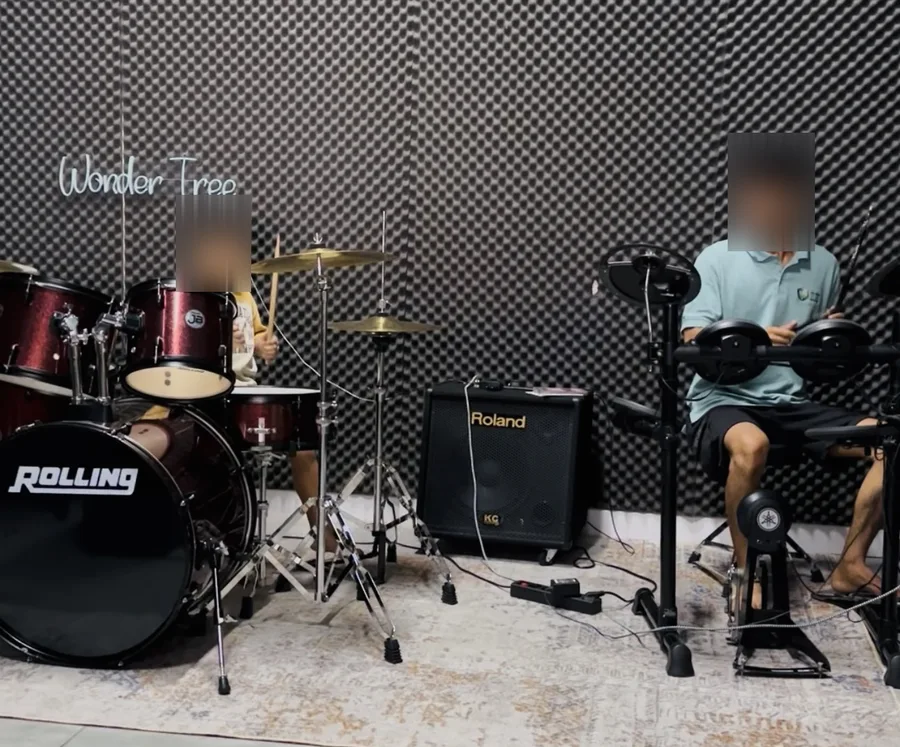
Latihan ketukan bersama guru di studio Wonder Tree
Terbuka untuk umum. Siapa pun boleh datang untuk bermain di playground indoor dan outdoor, makan di restoran Wonderlicious, atau membaca di North Bali Kids Library. Anak tidak perlu terdaftar di kelas Wonder Tree untuk berkunjung.
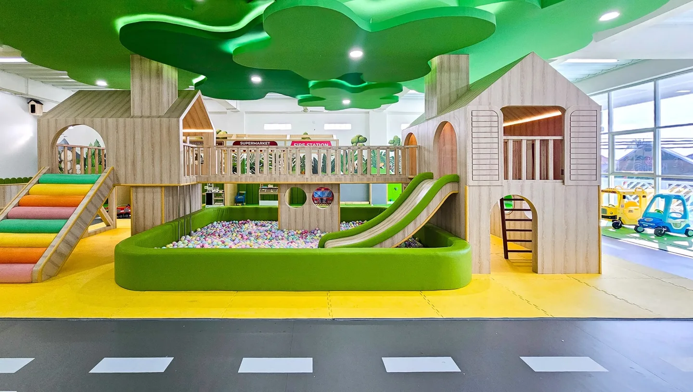
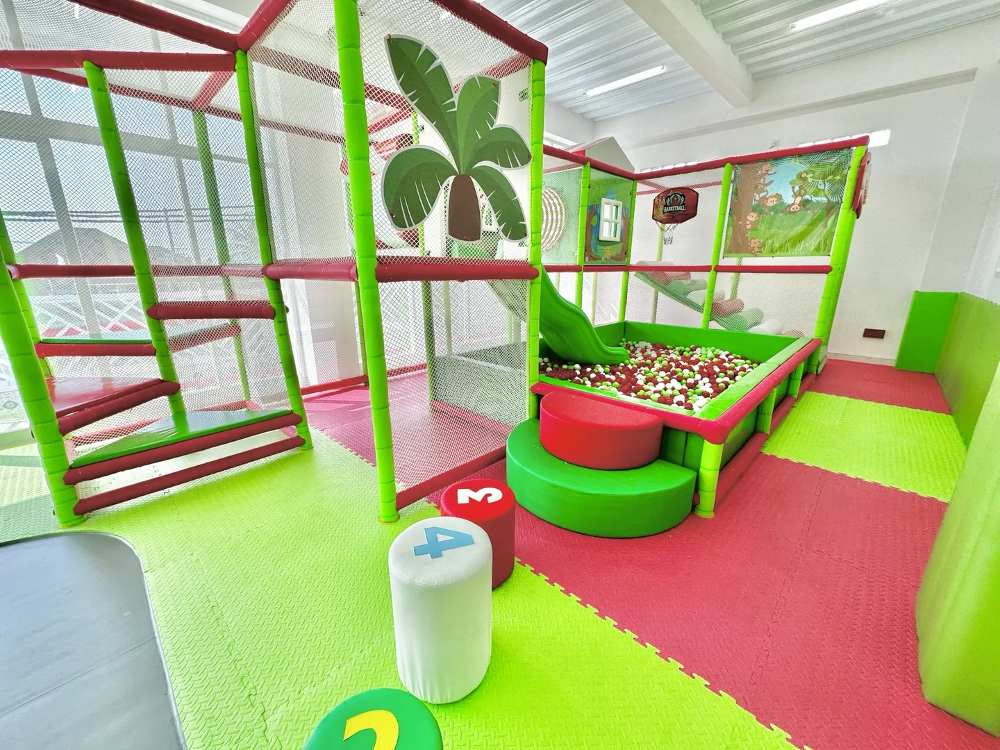
Playground indoor
Ruang bermain di dalam gedung untuk anak yang ingin bergerak dan menjelajah.
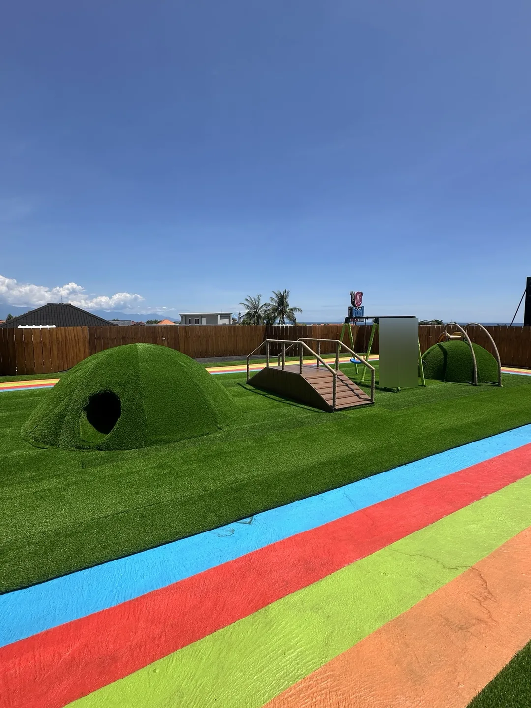
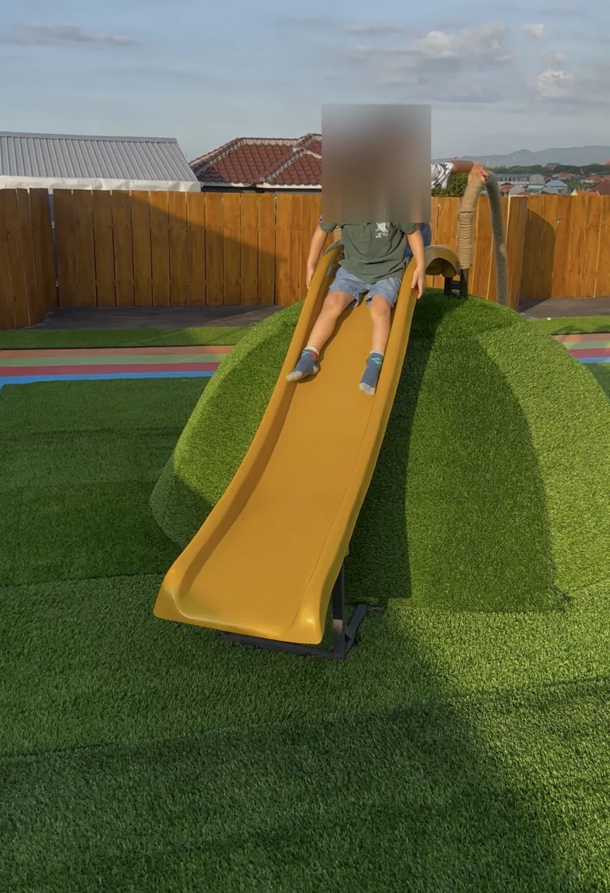
Playground outdoor
Area bermain terbuka untuk menikmati waktu di luar ruangan.
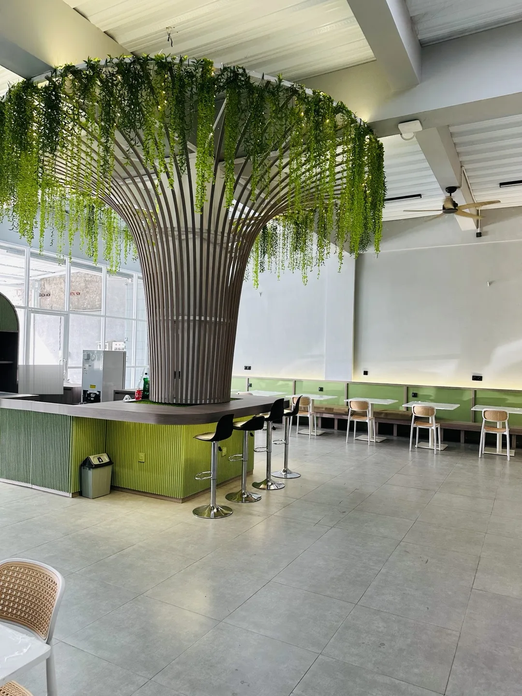
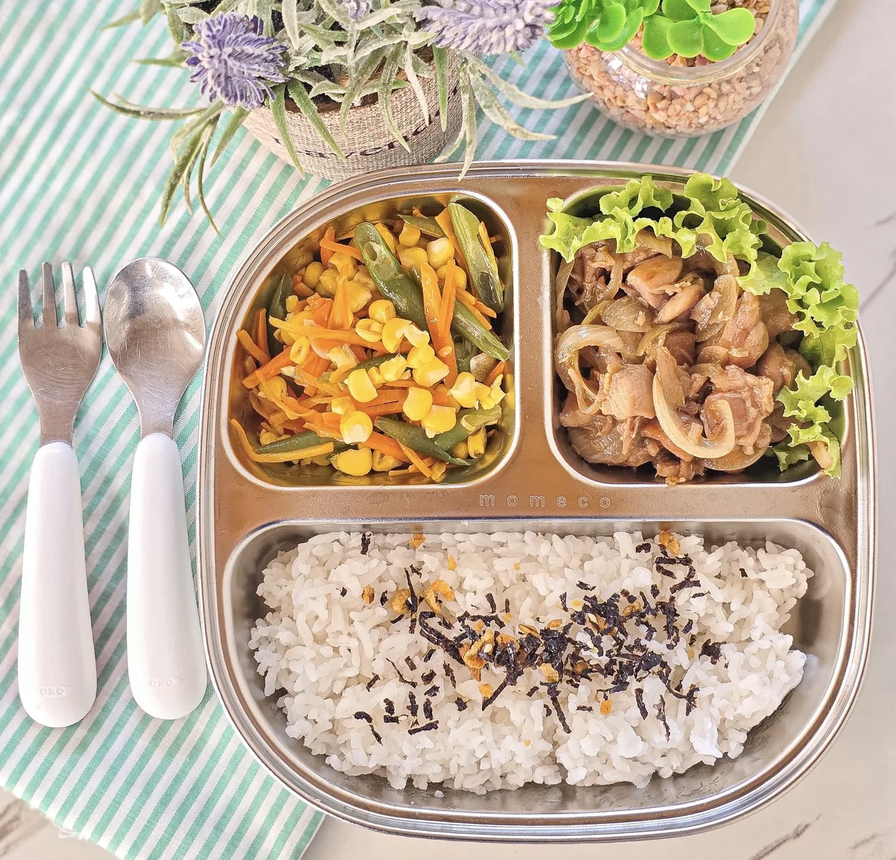
Wonderlicious
Restoran ramah keluarga di dalam Wonder Tree. Seusai kelas atau bermain, anak dan orang tua bisa makan bersama di sini.